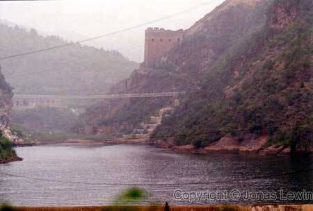

China, Beijing, The Great Wall close to Si Ma Tai, 2001-08
|
Last time I visited Ba Da Ling, and it was packed of tourists. This part
of the wall is so much better, and you can climb a lot more. For those that
doesn't want to climb, there is a shortcut that costs some money. But for us
that really want to experience, you have a 2-3 hour climb, and ½-1 hour back
down.
Let's
start our walk to see as much as we can of The Great Wall, here close to Si
Ma Tai. We start of at the base of a lake. And for every group of tourists, a Chinese person will accompany you. They will sell Water (which will come in handy), or many useless stuff. When you come up higher, you will find some other places where they sell water. It's cheaper to buy them at the tourist shops at the base. But, then you will have to carry the water for quite a while.
You will need lots of water.
It is truly the only wonder of the world, still standing.
Some places you where actually looking down on some mountain ridges. Luckily we where here when it was misty, so there was almost no wind.
Come to think of it, I was quite warm at this point, Perhaps some wind would
cool me off.
Sorry, I can't go any further. |